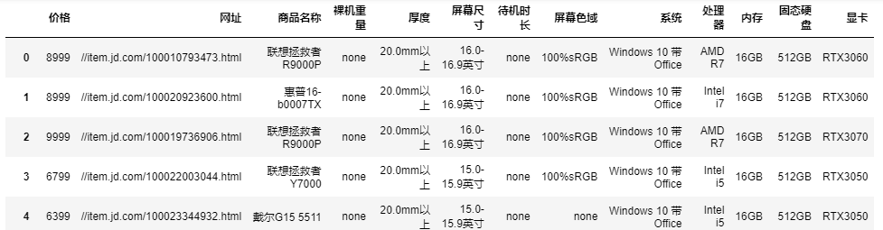
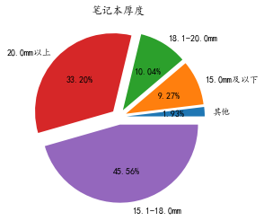
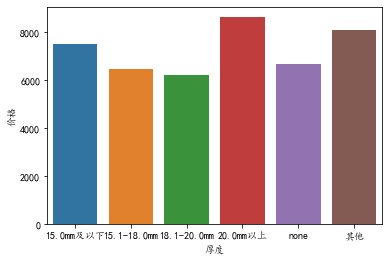
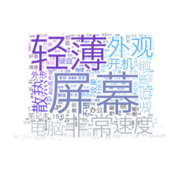

引言
Linkedln在雷曼兄弟倒闭前发现雷曼兄弟的来访者变多；在谷歌宣布退出中国的前一个月，有一些平时很少见的谷歌产品经理在线…… 简单的数据也能折射、解析出意义重大的信息。京东的笔记本电脑数据虽然常见的似乎毫不起眼，但是其中其实蕴含了电脑的主流品牌、 价位、配置要求……在实际中可以被商家用于选择自家所要代理的电脑，可以被生产厂家用于把握市场趋势、制造出更好的产品， 可以被普通消费者用于选购主流的笔记本电脑……可以说是用途广泛。
大量的数据想要产生实际价值和效益离不开有效的数据处理和分析，Python、Excel、PowerBi等工具则为我们提供了大量工具……
数据清洗
对下载/爬虫得到的源数据首先要进行数据清洗，少量的缺失值可以接受，可以进行忽略或者用平均值等方法进行填充。但是过多的缺失值会使得数据分析效果大打折扣，例如：在计算某项的平均值时，过多的缺失项会导致结果产生偏差。
下列代码将实现删除一行中空缺值大于4的数据，源数据如下图：
数据预处理
由于在数据分析中需要用到一些特定的规整数据，例如源数据样式为：“联想拯救者R9000P”， 在实际分析需要将其品牌“联想”提取出来，因而需要对数据进行一些预处理。源数据和目标数据如下两图:
数据分析
可视化分析
如果我们想根据现有的数据：品牌、厚度、价格等数据进行分析，那么简单的可视化就能让我们对纷繁杂乱的数据有一个直观的了解, 从而快速捕捉数据背后的信息，有利于我们后续进行数据建模等操作
根据现有信息，我们在这里对品牌、价位和厚度进行简要分析：了解当下市场的主流品牌、价位和厚度，有利于我们对数据有着更好的整体把握， 品牌和价位的分析较为简单，源代码已经放在Github上，下面我们会介绍对厚度的可视化分析。
首先看一下笔记本厚度的大致分布：
注：Groupby函数主要用于对数据的分组运算，其操作包括拆分对象、应用函数和合并结果的组合。这可用于对大量数据进行分组并 计算这些组上的操作。
pandas.groupby官方文档 matplotlib官方文档
a = data1.groupby(['价位']).count()
b = a['index'].sort_values()
explode = (0.1, 0.1, 0.1, 0.1, 0.1, 0.1, 0.1, 0.1)
plt.pie(b, explode=explode, labels = b.index, autopct='%1.2f%%')
plt.title('笔记本价位')
plt.show()

然后再以价格为参考系看一下笔记本电脑厚度的分布
a = data1.groupby(['厚度'])['价格'].mean()
sns.barplot(x=a.index, y=a)

可以看到在笔记本厚度方面，15.1-18.0mm的厚度占据主流。但是在轻薄为主流的笔记本市场中，20.0mm的高端价位的笔记本的市场份额依旧不小。
虽然python的matplotlib和seaborn等主流可视化库能够产出不错的可视化效果图，但是相比其他的专业可视化工具依旧在图的种类、美观程度 以及易操作性方面有着较大的区别。
以Powerbi为例，像下图这样的百分比堆积柱状图，在Python中需要自己计算堆积的比例，数据样本较多是需要写好几个循环，效率较低。 而Powerbi只需要在选择“可视化”中“百分比堆积柱状图”的选项后，进行几下拖拽。并且还能添加筛选器，实现对特定数据的观察，无需编程。
同时Powerbi还支持气泡图、树形图、仪表盘、着色地图等多种图片，还有强大的建模工具Power Pivot、支持PowerQuery语句并且有 微软的良好配套办公生态，可以说在可视化领域有着得天独厚的优势
进阶分析
简单的数据可视化处理不能完全满足业务需求，因此要通过其他的手段来进行处理。例如，数据量较大、并且无法被规整的评论数据就难以被传统可视化方法处理，在这里使用词云图：通过形成“关键词云层”或“关键词渲染”，对网络文本中出现频率较高的“关键词”的视觉上的突出。 在这其中运用到了机器学习的自然语言处理，调用了jieba库analyse.extract_tags——一种基于TF-IDF算法的关键词抽取方法。
首先先对评论进行爬取，由于数据量的关系，我只爬取了一件商品的前250条评论 源代码参考链接
import requests
import json
import time
import openpyxl #第三方模块，用于操作Excel文件的
#模拟浏览器发送请求并获取响应结果
import random
def get_comments(productId,page):
url='https://club.jd.com/comment/productPageComments.action?callback=fetchJSON_comment98&productId={0}&score=0&sortType=5&page={1}&pageSize=10&isShadowSku=0&fold=1'.format(productId,page) # 商品id
headers = {
'User-Agent': 'Mozilla/5.0 (Windows NT 10.0; Win64; x64) AppleWebKit/537.36 (KHTML, like Gecko) Chrome/92.0.4515.107 Safari/537.36'
}
resp=requests.get(url,headers=headers)
#print(resp.text) #响应结果进行显示输出
s1=resp.text.replace('fetchJSON_comment98(','') #fetchJSON_comment98(
s=s1.replace(');','')
#将str类型的数据转成json格式的数据
# print(s,type(s))
# print('*'*100)
res=json.loads(s)
print(type(res))
return res
lst=[] #用于存储提取到的商品数据
for page in range(0,25):
comments=get_comments(productId,page)
comm_lst=comments['comments'] #根据key获取value，根据comments获取到评论的列表（每页有10条评论）
#遍历评论列表，分别获取每条评论的中的内容，颜色，鞋码
for item in comm_lst: #每条评论又分别是一个字典，再继续根据key获取值
content=item['content'] #获取评论中的内容
color=item['productColor'] #获取评论中的颜色
size=item['productSize'] #鞋码
lst.append([content,color,size]) #将每条评论的信息添加到列表中
time.sleep(3) #延迟时间，防止程序执行速度太快，被封IP
save(lst) #调用自己编写的函数，将列表中的数据进行存储
def save(lst):
wk=openpyxl.Workbook () #创建工作薄对象
sheet=wk.active #获取活动表
#遍历列表，将列表中的数据添加到工作表中,列表中的一条数据，在Excel中是 一行
for item in lst:
sheet.append(item)
#保存到磁盘上
wk.save('电脑销售数据.xlsx')
if __name__ == '__main__':
productId='100015691164' # 单品id
get_info(productId)
然后运用简单的自然语言处理就能很好的实现分词操作
from wordcloud import WordCloud, ImageColorGenerator
from PIL import Image
import numpy as np
import matplotlib.pyplot as plt
import jieba.analyse
# 打开文本
text = open('data.txt', encoding='UTF-8').read()
# 提取关键词和权重
freq = jieba.analyse.extract_tags(text, topK=200, withWeight=True)
print(freq[:20])
freq = {i[0]: i[1] for i in freq}
# 生成对象
mask = np.array(Image.open("color_mask.jpeg"))
wc = WordCloud(mask=mask, font_path='Hiragino.ttf', mode='RGBA', background_color=None).generate_from_frequencies(freq)
# 从图片中生成颜色
image_colors = ImageColorGenerator(mask)
wc.recolor(color_func=image_colors)
# 显示词云
plt.imshow(wc, interpolation='bilinear')
plt.axis("off")
plt.show()
# 保存到文件
wc.to_file('wordcloud.png')
最后得到了一个权重向量和词云图：可以看到轻薄、屏幕、外观、速度等因素是普通消费者比较关注的因素，可以在商家宣传、购买模型建立的时候加以关注
[('屏幕', 0.16388467304606671), ('轻薄', 0.14301771711416067), ('非常', 0.13726878307998927), ('外观', 0.1222255230154285), ('速度', 0.11522379532542637), ('电脑', 0.11464037256321785), ('散热', 0.10903468490917409),
('开机', 0.10161973822084092), ('惠普', 0.10102055910475169), ('运行', 0.08920056314071866), ('外形', 0.06873900999392685), ('效果', 0.0660252147495731), ('不错', 0.06305719325126032), ('笔记本', 0.060444276228982095),
('键盘', 0.059217178912731955), ('办公', 0.054811373776647), ('清晰', 0.054358332713036576), ('15.6', 0.051291504892845646), ('高色域', 0.05000921727052451), ('很快', 0.04931397890065537)]

作业(Github上有数据分析课后练习.md的文件)
- 在进行数据预处理——品牌名称提取时有一处小错误，请找出来
- 通过Matplotlib库实现对屏幕尺寸大小的分析